Inktober 2020
Retour de l’Inktober avec quelques créations sans prétention.
J1 – Fish / Poisson
D’abord crayonné et repassé aux stylos de couleurs, j’ai finalement reproduit mon esquisse sur tablette en utilisant un crayon plutôt diffus qui donne un effet « aquarelle » que je trouve approprié pour ces poissons de style japonais.
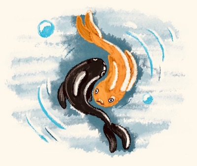{kind=link}
J2 – Wisp / Feu follet
{kind=link}
Mon idée était de faire sentir une atmosphère pesante et effrayante avec cette forêt lugubre et ces lumières incertaines qui tentent de nous enfoncer plus loin. L’effet est plutôt opposé. On croirait avoir affaire à une forêt enchantée et les feux follets paraissent sympathiques.
J3 – Bulky / Massif
Un éléphant qui essaye de se faire tout petit parce qu’il sent qu’il n’est pas à sa place. Il a déjà écrasé un carton et d’autres menacent de tomber. Il ne doit plus bouger le pauvre petit.
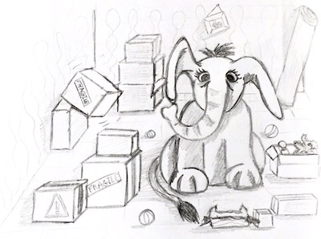{kind=link}
J4 – Radio / … voilà quoi
{kind=link}
Première impression, première pensée, le groupe Queen qui interprète leur fameuse chanson Radio Ga Ga en concert. Bien reconnaissable, car tiré de l’un de ses photos, j’ai donc esquissé un portrait de Freddie Mercury lors du Live Aid de 1985.
J5 – Blade / Lame
La lame m’a fait penser au katana, qui m’a fait penser au Japon, qui a amené les sushis à mon esprit. Le fait que la lame soit affutée donne des traits linéaires et fins. C’est Diatomée qui m’a donné l’idée de traiter la scène de cette façon.
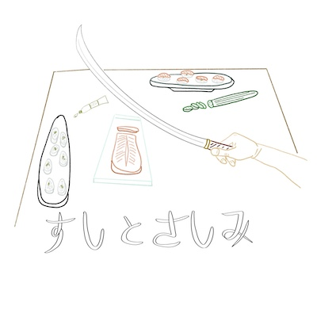{kind=link}
J6 – Rodent / Rongeur
{kind=link}
Pour ce qui est de dessiner des rongeurs, il y avait le choix. L’idée du Casse-noisette, ce personnage à l’allure un peu militaire qui prête parfois sa frimousse à l’ustensile servant à casser les fruits à coque, me semblait intéressante aussi. Qui de mieux qu’un écureuil pour casser des noisettes ?
J7 – Fancy / Fantaisie, imaginaire
J’aime ce genre de thème qui permet de laisser parler son imagination. J’avais vraiment l’intention de représenter une girafe doudouille, type énorme peluche, mais il se trouve qu’elle a l’air d’un diplodocus. Qu’à cela ne tienne, je l’aime encore plus comme ça ! Et la gamine qui s’amuse avec aussi.
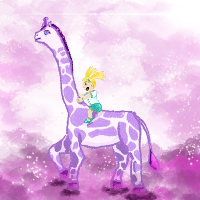{kind=link}
J8 – Teeth / Dents
{kind=link}
Sans commentaire. Tout est dans le crayonné 😁. Il faut juste reconnaître la Bouche de Sauron et penser à la réaction légendaire de ce cher Aragorn qui ne croit pas à ses dires et n’y croira jamais !
J9 – Throw / Jeter
♪ « Jette un sou au Sorceleur, lalalalalalla lalalalalalla » ♫
Un bougre lance une pièce au Sorceleur pour qu’il le débarrasse d’un monstre. Tout ce qu’il y a de plus normal.
{kind=link}
J10 – Hope / Espoir
{kind=link}
Cette personne est montée sur la colline pour mieux voir les étoiles, dans l’espoir qu’une étoile filante surgisse et lui permette de formuler un vœu.
Il y a un petit problème de plan avec la lanterne.
J11 – Disgusting / Dégoûtant
Cette allégorie de la Justice est plutôt banale : la balance.
Ici, elle est déséquilibrée à cause du poids de la corruption, représentée par des liasses de Dollars. La Justice elle-même est vendue. Son auréole – son impartialité – se brise sitôt qu’elle souffle sur la plume pour libérer son deuxième plateau. Si celui-ci accueille aussi de l’argent, elle sera de nouveau en équilibre et la Justice redeviendra intègre… À sa façon.
Petit clin d’œil aux couleurs de l’UE.
{kind=link}
J’ai procédé différemment par rapport à d’habitude pour ce dessin. Plutôt que d’esquisser les contours et de colorier ensuite, j’ai utilisé un pinceau large (sur tablette) pour esquisser directement les formes, que j’ai reprécisées au fur et à mesure. Le résultat me plaît bien.
J12 – Slippery / Glissant
{kind=link}
Ce thème a fait surgir de ma mémoire la scène du film Fight Club où, alors qu’il doit trouver son animal porteur de force, Marla s’immisce dans l’esprit de Cornélius et lui dit « Glisse ». Ce qu’il fait, si je ne m’abuse. Bref, des pingouins glissant de bon cœur, comme ceux que Aang prend pour des luges dans Avatar, le dernier maître de l’air. Que du bonheur, même si ces petits animaux ont plutôt l’air d’empreintes de léporidés 🐇.
J13 – Dune / …
Le manque d’inspiration commence à se faire sentir. Le mot « dune » m’évoque de nombreuses choses, de Jabba le Hutt aux chameaux en passant par les tubes bizarroïdes plantés dans le nez des personnages dans le film Dune et du coup, Timothée Chalamet (dans la dernière adaptation en date). Au final, le résultat est plutôt simple. Et encore, j’ai ajouté le personnage en dernier lieu parce qu’on m’a dit que je ne m’étais pas foulée 😃.
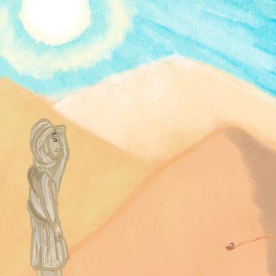{kind=link}
J14 – Armor / Armure
{kind=link}
J’ai d’abord pensé que ce thème ne me parlait pas. Puis me sont revenus en mémoire les armures qui ornent les couloirs de Poudlard et qui, à Noël, chantent les cantiques d’une voix sépulcrales en oubliant la moitié des paroles. Évidemment, Peeves, l’esprit frappeur, se cache à l’intérieur pour remplacer les paroles manquantes par quelques vers de son cru. Trop difficile à représenter pour moi. Finalement, une pauvre âme a enfilé une armure, mais ne peut s’en débarrasser. Il a besoin d’aide.
J15 – Outpost / Avant-poste
Voici un thème qui n’inspire que le vide dans mon esprit. La première moitié du défi étant passée, les choses me semblent bien difficiles. En fin de compte, j’ai essayé de représenter les remparts gardés d’une cité fortifiée. J’ai utilisé des pastels à l’huile. Ce n’est pas une réussite.

J16 – Rocket / Fusée
{kind=link}
La fusée, c’est Rocket, ce bon chien joueur qui course un papillon. Il est tellement emporté dans son élan qu’il déterre toutes les fleurs et le jardinier s’en arrache la tête.
Retour au dessin au crayon de papier; simple esquisse qui fait plaisir quand-même.
J17 – Storm / Tempête
La tempête m’évoque invariablement l’orage dont les éclairs font résonner en moi les échos de Samare, mon histoire en cours d’écriture.
Au temps de ses balbutiements, le roman relatait l’accident terrible que subissait Rena, le personnage principal. Il était frappé par la foudre; une foudre qui avait l’apparence d’un albatros aux contours bleus électriques.
{kind=link}
J18 – Trap / Piège
{kind=link}
Le piège n’est pas évident à représenter, car dans la vie, de nombreuses choses sont faites pour piéger les âmes naïves. La beauté sulfureuse de cette chanteuse de cabaret est idéale pour attirer le client et le pousser à consommer, par exemple. Ce thème m’a fait penser à Jessica Rabbit, la femme du lapin dans Qui veut la peau de Roger Rabbit ?. C’est avec son bon souvenir que j’ai esquissé cette chanteuse, puis j’ai ajouté les couleurs sur tablette.
J19 – Dizzy / Tournis
Qu’il est long ce défi ! Je n’en peux plus et je n’ai plus d’idée.
Le tournis, le tournis… Le tourbillon de la vie, l’amour, la danse. Une toupie.
{kind=link}
J20 – Coral / Corail
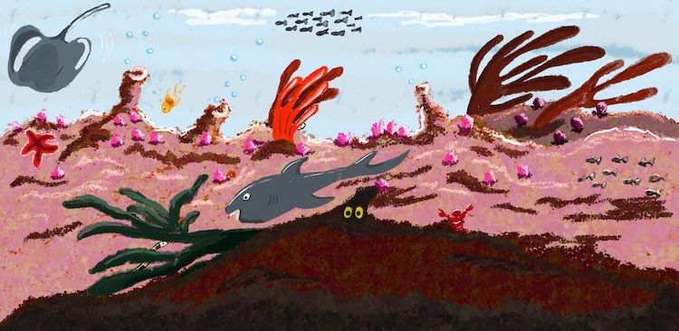« Sous l’océan, la vie est super, mieux que sur la terre, je te le dis ! » 🎵
C’est Sébastien le crabe qui m’a dicté ce dessin-là.
J21 – Sleep / Dormir
J’ai d’abord voulu représenter le marchand de sable qui souffle un rêve. Pour ce faire, il me fallait quelqu’un qui dort, et de ce fait, une chambre. Pour finir, le marchand de sable ne ressemblait à rien ^^.
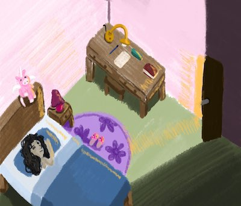{kind=link}
J22 – Chef / …
{kind=link}
Le thème ne m’inspirait pas vraiment, comme souvent. L’intérêt de ce défi est de pouvoir s’approprier un sujet pour l’interpréter de manière originale. Je n’avais pas vraiment d’idée ici. Le chat-chef de cuisine pouvait être rigolo.
J23 – Rip / Déchirer
Ambiance glauque pour un thème glauque. Ce pauvre bougre semble souffrir, mais son reflet reste inerte.
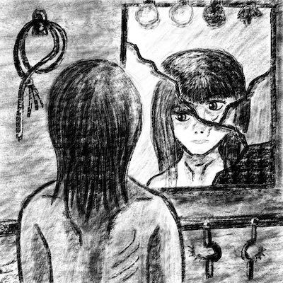{kind=link}
J24 – Dig / Fouiller
{kind=link}
Voilà ce qui se passe dans une tête bien faite. L’un des fantômes du passé semble vouloir faire resurgir un souvenir qui cause quelques soucis au personnage.
J25 – Buddy / Potes
Voici Ernest, zoologue et cartographe débarqué sur une exoplanète habitable. Il y a découvert le poésor, avec qui il est devenu très ami 😁.
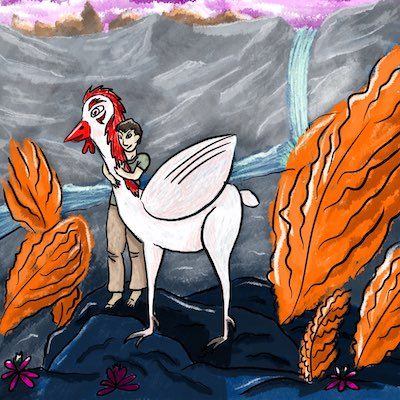{kind=link}
J26 – Hide / Caché
{kind=link}
L’essentiel est caché 😎.
Bon, ce n’était pas mon idée à la base, mais disons que je l’ai représentée d’une façon bien étrange et dérangeante. On m’a prise pour quelqu’un de dérangé en tout cas ^^.
J27 – Music / Musique
♪ « Tout le mondeuh, tout le mondeuh, tout le monde veut devenir un Cat ! Hallelujah, Hallelujah ! » ♫. Hahaha.
J’ai largement suivi le modèle des Aristochats, autrement ils ne seraient pas si mignons ces chats de gouttières.
J28 – Float / Flotter, flottement

Il est pépouze lui. J’ai utilisé les deux pinceaux que Diatomée a crée sur Procreate. Je dois encore m’exercer avec eux pour obtenir un rendu plus doux.
J29 – Shoes / Chaussures
Voici Godasse, le troll en boîte (inspiré du film d’animation Les Boxtrolls). Il a une drôle d’allure, il me fait bien rire. Il est sans doute plus proche du clown que du troll, mais il a trouvé la tenue idéale.
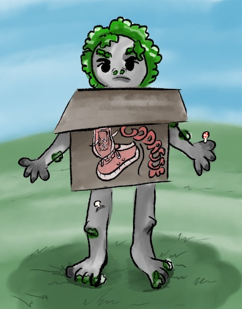{kind=link}
J30 – Ominous / Inquiétant
{kind=link}
Un bateau fantôme hante les flots. Sa proue fend le brouillard pour annoncer le pire. Son équipage maudit s’abat sur les rivages en quête de rédemption. C’est la crainte et l’angoisse qui navigue sur les mers troublées.
J31 – Crawl / Se faufiler
Pour ce dernier dessin, voici Winnie l’ourson qui s’apprête à rentrer chez lui par la porte magique, située au pied de l’arbre. Mais, c’est ennuyeux, il a du miel plein les pattes !
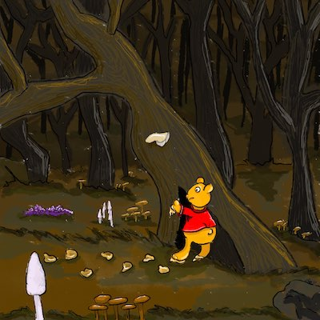{kind=link}